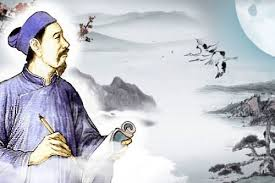

Tổng hợp các tác phẩm Nguyễn Trãi hay tiểu biểu
Những tác phẩm Nguyễn Trãi mang nhiều đóng góp to lớn trong lĩnh vực quân sự và chính trị. Với lối viết sắc sảo, ngắn gọn nhưng chứa đựng ý nghĩa sâu sắc, các bài thơ và văn chính luận của ông là di sản văn hóa vô giá của dân tộc.
Trọn bộ các tác phẩm Nguyễn Trãi
Nguyễn Trãi (1380-1442) là một trong những nhân vật vĩ đại trong lịch sử văn hóa Việt Nam, nổi tiếng không chỉ với vai trò chính trị gia, quân sự gia, và ngoại giao gia mà còn là một nhà thơ xuất sắc.
Ông có nhiều đóng góp quan trọng trong cuộc kháng chiến chống quân Minh và đóng vai trò chủ chốt trong việc xây dựng nhà nước Đại Việt dưới triều Lê Sơ.
Trong số các tác phẩm của ông, thơ ca là thể lọai được yêu thích và nổi bật nhất. Tập thơ Ức Trai viết bằng chữ Hán với 105 bài thơ là di sản văn hóa quý báu mà ông để lại cho thế hệ sau.
Ngoài ra, tập văn chính luận Bình Ngô đại cáo do Nguyễn Trãi chắp bút được coi là bản tuyên ngôn độc lập thứ hai của Việt Nam. Tác phẩm này nổi bật với sự sắc sảo, súc tích, đồng thời chứa đựng nhiều ý nghĩa sâu sắc, góp phần tạo nên sức thuyết phục mạnh mẽ cho văn bản. Đây cũng là phong cách sáng tác Nguyễn Trãi thường thấy.
Giới thiệu các tác phẩm Nguyễn Trãi hay nổi bật
Tác phẩm của Nguyễn Trãi đa dạng từ thơ chữ Nôm, chữ Hán cho tới văn chính luận. Trong suốt sự nghiệp sáng tác, ông để lại cho nền văn học Việt một kho tàng những tác phẩm hay xuất sắc.
Tuyển tập thơ Nguyễn Trãi bằng chữ Hán
Ba tiêu
Tự bén hơi xuân tốt lại thêm,
Đầy buồng lạ, màu thâu đêm.
Tình thư một bức phong còn kín,
Gió nơi đâu, gượng mở xem..
Lời bình
Ba tiêu là bài thơ phản ánh vẻ đẹp của thiên nhiên và tâm trạng của tác giả qua hình ảnh ba mảnh trăng trên bầu trời. Nguyễn Trãi sử dụng hình ảnh thiên nhiên để thể hiện sự hòa quyện giữa con người và vũ trụ, đồng thời bộc lộ những cảm xúc sâu lắng về cuộc đời và số phận.
Mỗi mảnh trăng không chỉ là một phần của bức tranh thiên nhiên mà còn gợi nhắc về những kỷ niệm và trải nghiệm cá nhân.
Bảo kính cảnh giới bài 43
|  |
Rồi hóng mát thuở ngày trường, |
Lời bình
Trong bài thơ, Nguyễn Trãi tiếp tục thể hiện quan điểm triết lý của mình về cuộc đời và những giá trị đạo đức. Bảo kính cảnh giới là một tập hợp các bài thơ chứa đựng những suy ngẫm sâu sắc về cuộc sống và sự tu thân, dưỡng tính.
Bài thơ này đặc biệt nhấn mạnh tầm quan trọng của việc giữ gìn đạo đức và trí tuệ trong cuộc sống, đồng thời cảnh báo về những cạm bẫy của thế gian.
Những bài thơ của Nguyễn Trãi bằng chữ Nôm
Cúc
Người đua nhan sắc thuở xuân dương,
Nghỉ chờ thu, cực lạ dường.
Hoa nhẵn rằng đeo danh ẩn dật,
Thức còn thông bạn khách văn chương.
Tính thanh nào đoái bề ong bướm,
Tiết muộn chẳng nài thuở tuyết sương.
Dầu thấy xuân lan cùng lọn được,
Ai ai đều có mấy mùi hương.
Lời bình
“Cúc” miêu tả vẻ đẹp giản dị và thanh tao của hoa cúc. Nguyễn Trãi dùng hình ảnh hoa cúc để thể hiện sự yên bình và thanh thản trong tâm hồn, cũng như bày tỏ sự hòa quyện giữa con người và thiên nhiên. Bài thơ không chỉ ca ngợi vẻ đẹp của hoa cúc mà còn phản ánh triết lý sống của tác giả, với lòng quý trọng những giá trị đơn sơ và bền bỉ trong cuộc sống.
Cuối xuân
Tính từ gặp tiết lương thần,
Thiếu một hai mà no chín tuần.
Kiếp thiếu niên đi thương đến tuổi,
Ốc dương hoà lại ngõ dừng chân.
Vườn hoa khóc, tiếc mặt Phi tử,
Trì cỏ tươi, nhưng lòng tiểu nhân.
Cầm đuốc chơi đêm này khách nói,
Tiếng chuông chưa đóng ắt còn xuân.
Lời bình
Cuối xuân thể hiện cảm xúc của Nguyễn Trãi về sự kết thúc của mùa xuân. Bài thơ không chỉ mô tả cảnh sắc mùa xuân tàn mà còn chứa đựng những suy ngẫm về thời gian và sự thay đổi. Nguyễn Trãi bộc lộ sự tiếc nuối và cảm nhận sâu sắc về sự vô thường của thiên nhiên và cuộc đời, đồng thời thể hiện sự trân trọng những khoảnh khắc quý giá của cuộc sống.
Các tác phẩm tiêu biểu của Nguyễn Trãi khác
Những bài thơ của Nguyễn Trãi hay và được lưu truyền muôn đời là việc không phải bàn cãi. Vậy những tác phẩm văn xuôi chính luận khác của ông thì sao?
Cùng theo dõi 2 tác phẩm văn chính luận, sách lịch sử và địa lý mà Nguyễn Trãi để lại cho thế hệ sau để hiểu rõ hơn:
Dư địa chỉ
Lời bình
Dư địa chí của Nguyễn Trãi là một tác phẩm quan trọng trong lĩnh vực địa lý của Việt Nam thời kỳ phong kiến. Được viết trong thế kỷ XV, tác phẩm này không chỉ ghi chép về các đặc điểm địa lý, phong tục tập quán của các vùng đất mà còn phản ánh sự hiểu biết sâu rộng của tác giả về đất nước. Nguyễn Trãi đã mô tả một cách chi tiết các vùng miền, cảnh quan, và tài nguyên thiên nhiên, đồng thời thể hiện sự quan tâm đến sự phát triển và quản lý tài nguyên của đất nước. “Dư địa chí” không chỉ có giá trị thực tiễn mà còn góp phần xây dựng cơ sở cho nền văn học địa lý của Việt Nam.
Lam Sơn thực lực
Lời bình
Lam Sơn thực lục là một tác phẩm lịch sử quan trọng ghi lại những sự kiện và chiến công trong cuộc kháng chiến chống quân Minh của nghĩa quân Lam Sơn dưới sự lãnh đạo của Lê Lợi. Nguyễn Trãi, với vai trò là một nhà chính trị và quân sự xuất sắc, đã viết tác phẩm này để ghi nhớ những chiến thắng và những khó khăn của cuộc kháng chiến.
Tác phẩm không chỉ cung cấp một cái nhìn chi tiết về các chiến dịch quân sự mà còn thể hiện lòng yêu nước và tinh thần kiên cường của nhân dân Việt Nam. “Lam Sơn thực lục” là một tài liệu quý giá cho nghiên cứu lịch sử và là nguồn cảm hứng cho thế hệ sau.